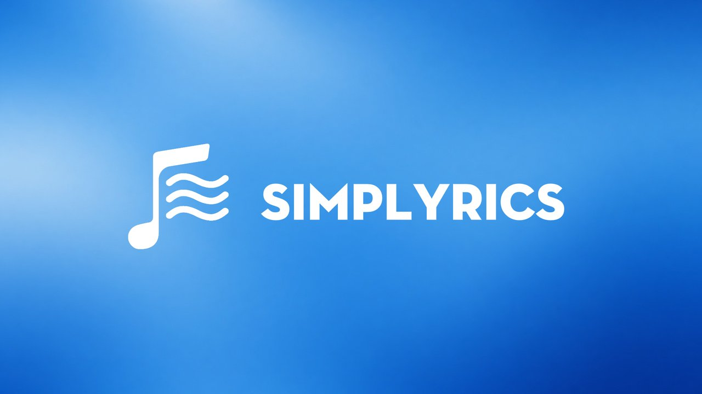
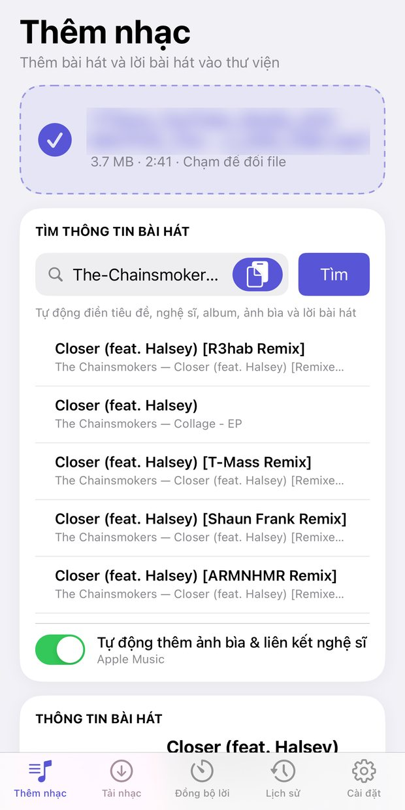
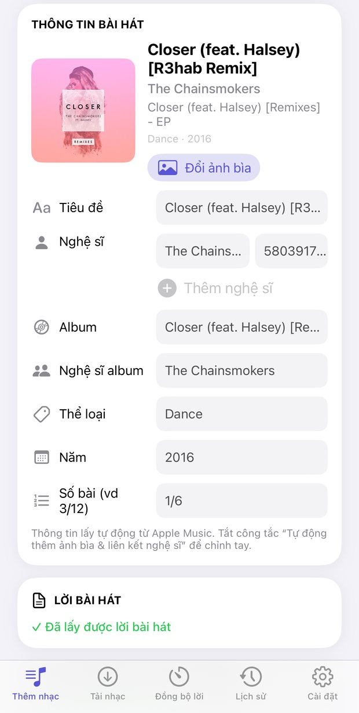
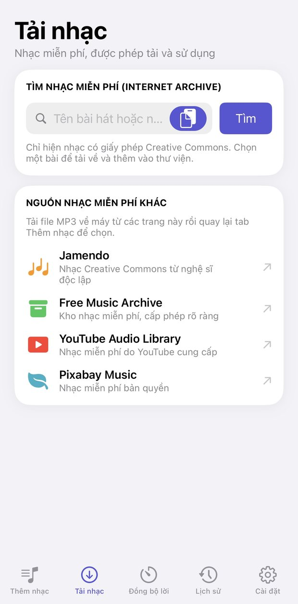
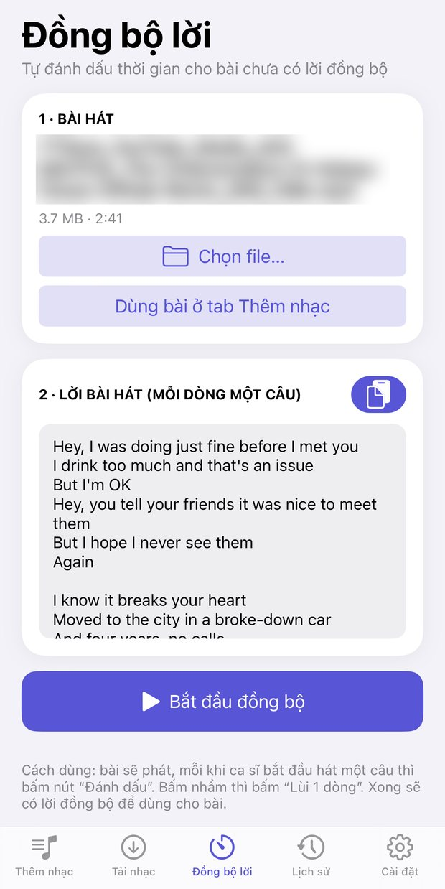
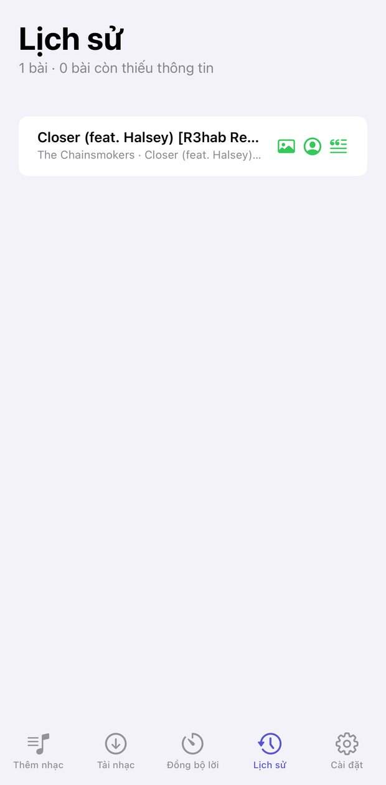

Simplyrics
Phiên bản 0.8.92 · iOS 15+ · Roothide, Rootless
Thêm nhạc vào thư viện kèm thông tin, ảnh bìa và lời. Bản miễn phí có tìm thông tin, ảnh bìa, lời thường và tải nhạc; Premium mở khóa lời đồng bộ, liên kết nghệ sĩ và nhiều hơn nữa.





- Tìm thông tin bài hát từ Apple Music: tiêu đề, nghệ sĩ, album, thể loại, năm
- Tự thêm ảnh bìa 1200×1200 và liên kết nghệ sĩ Apple Music
- Ghi lời bài hát thường và lời đồng bộ (LRC) vào file MP3
- Đồng bộ lời: vừa nghe vừa chạm để đánh dấu từng dòng
- Nghe thử, chỉnh lệch thời gian lời
- Thêm bài vào thư viện Nhạc, nhập nhiều file từ Files, xem lịch sử
- Tìm nhạc miễn phí (Creative Commons) để tải về
- Tweak cho app Nhạc: lời đồng bộ kiểu Apple Music, có hiệu ứng (Premium)
Premium
Mở khóa toàn bộ tính năng chỉ 29.000đ, mua một lần dùng trọn đời cho 1 máy. Liên hệ để mua và nhận mã kích hoạt.
Nhật ký thay đổi
Phiên bản 0.8.92 17/10/2026
- Bản miễn phí được tìm thông tin bài hát và tự gắn tên nghệ sĩ từ Apple Music (không liên kết trang nghệ sĩ)
- Thẻ lời đồng bộ gọn hơn khi chưa có Premium
- Thêm mức giá Premium 29.000đ trọn đời trong popup giới thiệu
Phiên bản 0.8.89 17/10/2026
- Thêm giấy phép Premium: bản miễn phí lưu nhạc, ảnh bìa, lời thường và tải nhạc; Premium mở khóa phần còn lại
- Kiểm tra giấy phép mỗi lần mở app
- Tweak lời đồng bộ trong app Nhạc cần giấy phép Premium
- Thêm trang giới thiệu Premium và nút liên hệ mua
Phiên bản 0.8 16/10/2026
- Ra mắt trên kho Realm iOS, cài bằng Sileo cho Roothide và Rootless
- Đồng bộ lời: vừa nghe vừa chạm để đánh dấu từng dòng
- Nghe thử trong app và chỉnh lệch thời gian lời
- Nhập nhiều file cùng lúc từ Files
- Bài có nhiều nghệ sĩ: mỗi nghệ sĩ một dòng, gắn đúng ID Apple Music
- Sửa lỗi dán văn bản, thêm nút ẩn bàn phím
- Gỡ lời song ngữ vì làm lời nhảy sai hoặc chậm